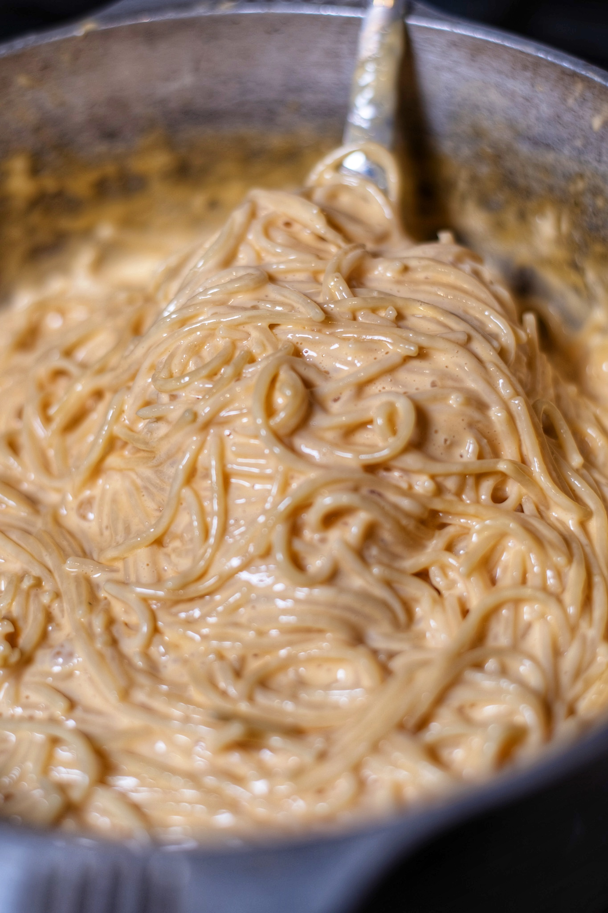

Homepage
Spaghetti and Cheese Sauce Recipe

Lil' Background
My Grandmother has been making this recipe since the 1970's. I
love it, and hopefullluy if you have the time, you can make it too
and tell me your thoughts!
This recipe will delight anyone you serve it to with its simple,
yet delicious flavors. The combination of cheese, tomato, beef and
sausage are just oh so good. This recipe can feed a lot of people,
probably 3-4, especially with the amount of meat sauce that's made.
Ingredients For Meat Sauce
- 1 lb sweet italian sausage
- 1 lb good hamburger meat
- 1 large onion
- 1/2 cup of parmesan cheese
- 2 tbsp sugar
- 3 tbsp olive oil
- Seasonings
- 1 tbsp oregano
- 1 tbsp basil
- 2 tbsp garlic powder
- 2 tbsp anise
- Tomato Products
- 1 28oz can of whole peeled tomatoes in tomato juice
- 1 6oz can of tomato paste
- 4 15oz cans of Contadina tomato sauce
- 2 15oz cans of regular water (Use the cans from the tomato sauce)
Ingredients For Cheese Sauce
This recipe is scaleable. Only makes about two cups. I like a
lot of cheese sauce so this would probably only feed about 2
people if you're like me.
- 2 tbsp real butter
- 2 tbsp all-purpose flour
- A pinch of salt
- 1 cup whole milk
- 1 1/2 lbs Craft American sliced cheese
Instructions
Pasta
- My Grandmother recommends Barilla Linguine for the pasta. Follow their instructionos on the box. 2 boxes should be plenty.
Meat Sauce
- Dice the onion
- Remove the sausage from the casing
- Mix both meats, and the onions together
- Toss in a pan with olive oil and brown them together
- After browning, drain fat from pan
- Add all tomato products, sugar and seasonings to the pan
- Put on low heat, stir and let boil down to desired thickness
Cheese Sauce
- In a sauce pan, melt the butter
- Stir in flour & salt. Stir until pasty
- Add milk and let thicken on low heat. The thickening will sneak up on you 👀
- Add cheese incrementally until desired color and taste is achieved
Final Thoughts
This has to be one of my favorite meals growing up. It's still such a delight to have with my family from time to time. Hopefully this dish brings you as much joy as it has for me all these years.